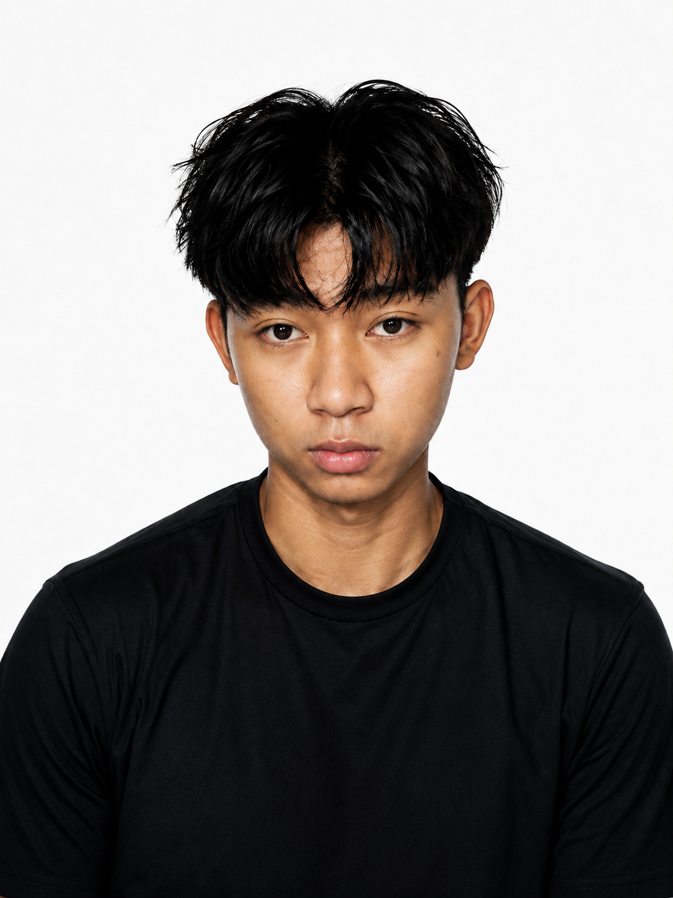

01
UI/UX Design
Mempelajari cara membuat tampilan antarmuka yang sederhana, menarik, dan mudah digunakan.
Halo, saya
Seorang siswa Rekayasa Perangkat Lunak (RPL) yang memiliki ketertarikan pada UI/UX Design, teknologi, dan dunia kreatif digital.

Yang sedang saya pelajari
Beberapa bidang yang sedang saya pelajari dan kembangkan melalui pembelajaran di sekolah, latihan mandiri, dan berbagai eksplorasi kreatif.
Mempelajari cara membuat tampilan antarmuka yang sederhana, menarik, dan mudah digunakan.
Mempelajari dasar pembuatan website dengan HTML, CSS, dan JavaScript.
Mengenal konsep pemrograman dan pengembangan perangkat lunak melalui pembelajaran RPL.
Mengembangkan ide, berpikir kreatif, dan mencari solusi untuk berbagai permasalahan.
Sedikit tentang saya
Desain bukan hanya tentang bagaimana sesuatu terlihat, tetapi juga tentang bagaimana sesuatu digunakan.
Saya Muhammad Iqdham Kharisma, seorang siswa SMK yang memiliki ketertarikan untuk berkembang di bidang UI/UX Design.
Saat ini saya menempuh pendidikan di SMKN 1 Semparuk dengan jurusan Rekayasa Perangkat Lunak (RPL). Saya tertarik mempelajari bagaimana desain dan teknologi dapat digabungkan untuk membuat produk digital yang sederhana dan bermanfaat.
Saya masih berada di awal perjalanan. Karena itu, saya terus belajar, mencoba hal baru, dan mengembangkan kemampuan melalui tugas sekolah, latihan, serta proyek-proyek kecil.
Perjalanan saya
Mempelajari dasar pengembangan perangkat lunak, pembuatan website, database, pemrograman, serta mulai mengeksplorasi bidang UI/UX Design melalui pembelajaran dan latihan.
Menyelesaikan pendidikan tingkat madrasah tsanawiyah sambil mengembangkan rasa ingin tahu, kreativitas, dan ketertarikan terhadap dunia teknologi.
Memulai pengalaman belajar pertama dengan pendidikan dasar dan mengasah kemampuan belajar
Tempat saya belajar
Sekolah Menengah Kejuruan
Rekayasa Perangkat Lunak (RPL)
Mempelajari pengembangan perangkat lunak, teknologi web, pemrograman, database, serta dasar-dasar pengembangan produk digital.
Madrasah Tsanawiyah
Pendidikan Menengah Pertama
Menempuh pendidikan tingkat menengah pertama dan mengembangkan dasar pengetahuan serta kreativitas.
Sekolah Dasar
Pendidikan Dasar
Menempuh pendidikan dasar sebagai tahap awal dalam membangun pengetahuan, kreativitas, dan pengalaman belajar.
Karya dan konsep yang saya kembangkan
Konsep aplikasi perpustakaan digital yang dirancang untuk membantu siswa mencari buku, melihat informasi buku, dan mengelola peminjaman dengan lebih mudah.
Konsep dashboard siswa yang menampilkan jadwal pelajaran, tugas, nilai, dan informasi sekolah dalam satu antarmuka yang sederhana dan terorganisir.
Website portofolio pribadi untuk memperkenalkan profil, keahlian, pendidikan, pengalaman belajar, dan berbagai karya yang sedang dikembangkan.
Jika ingin mengenal lebih jauh, berdiskusi, atau sekadar menyapa, kamu dapat menghubungi saya melalui media sosial yang tersedia.
Kirim Email